La ciudad es el núcleo del área metropolitana de Manabí Centro, junto con la capital provincial, Portoviejo; la conurbación está constituida además por ciudades y parroquias rurales cercanas. El conglomerado alberga a 651.053 habitantes, y ocupa la cuarta posición entre las conurbaciones del Ecuador.
La ciudad se ubica en la parte occidental de la Provincia de Manabí, en la bahía de Manta, en la Costa Centro – Sur del Ecuador. Esta zona, por influencia directa de la Corriente Fría de Humboldt la mayor parte del año, es muy seca y las lluvias son sumamente escasas, ya que solo llueve entre 150 a 250 mm³ anuales. La orografía del cantón y la ciudad son sumamente irregulares y accidentadas, ya que su altura promedio en todo el cantón es de entre 6 y los 400 m s. n. m., en donde la parte más baja es el perfil costanero y la parte más alta está ubicado en pleno centro del cantón, precisamente en el Bosque Húmedo de Pacoche ubicado a una altura de 400 metros sobre el nivel del mar.
A diferencia del resto de la Costa ecuatoriana cuyo clima es sumamente caluroso, lluvioso y húmedo por excelencia, el clima de Manta es muy diferente, ya que por su privilegiada ubicación geográfica en el Centro – Sur del Ecuador hay factores que suavizan y modifican el clima de la ciudad y el cantón y lo hacen mucho más agradable en relación al resto de la Costa.
 Ir a sitios turisticos
Ir a constumbres
Ir a Home
Ir a galeria
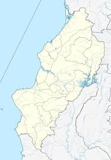
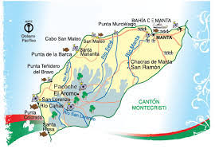
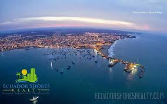
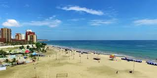
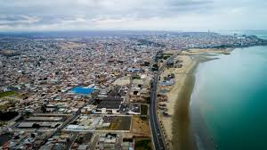
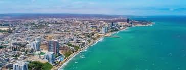
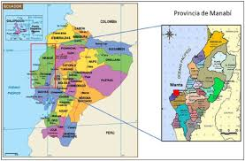
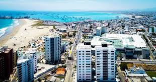
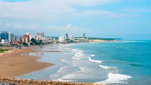
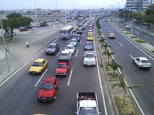
Ir a sitios turisticos
Ir a constumbres
Ir a Home
Ir a galeria
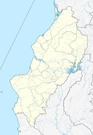
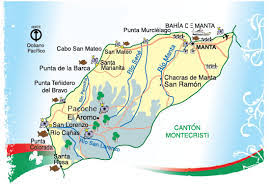
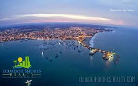
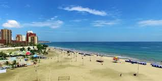
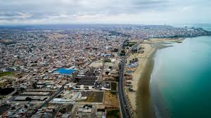
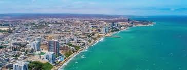
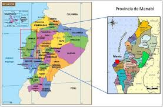
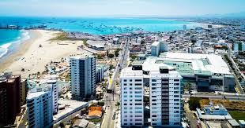
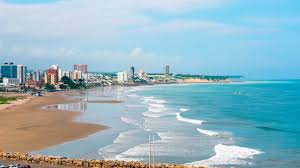
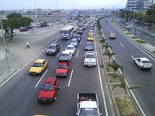